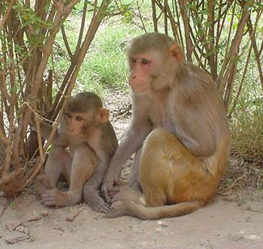

Malaria is caused by protozoan parasites called Plasmodia, belonging to the parasitic phylum Apicomplexa. More than 200 species of the genus Plasmodium (=plasma + eidos, form) have been identified that are parasitic to reptiles, birds, and mammals. Four Plasmodium species have been well known to cause human malaria, namely, P. falciparum, P. vivax, P. ovale, and P. malariae. A fifth one, P. knowlesi, has been recently documented to cause human infections in many countries of Southeast Asia. Very rare cases of malaria have been reported due to other species such as Plasmodium brasilianum, Plasmodium cynomolgi, Plasmodium cynomolgi bastianellii, Plasmodium inui, Plasmodium rhodiani, Plasmodium schwetzi, Plasmodium semiovale, Plasmodium simium and Plasmodium eylesi. All malaria parasites infecting humans probably jumped from the great apes (in case of P. knowlesi, macaques) to man.
{kind=link}
Subtypes of P. vivax: Plasmodium vivax is divided into two subtypes, a dominant form, VK210 and a variant form, VK247. This division is dependent on the amino acid composition of the circumsporozoite (CS) protein. A strain of P. vivax containing a variant repeat in its CS protein was first isolated in Thailand.[3,4]. The CS repeat of this variant strain (Thai VK247) differs at 6/9 amino acids within the repeat sequence found in all previously described P. vivax CS protein. Following this discovery, several studies have been conducted to evaluate the global distribution of variant VK247; it was detected in indigenous populations of China , Brazil , Mexico , Peru , and Papua New Guinea . It is known that the drug susceptibility of the VK247 subtype of P. vivax is slightly different than VK210 [10], as well as that Anopheles albimanus and Anopheles pseudopunctipennis differ in their susceptibilities to P. vivax circumsporozoite phenotypes. Anopheles albimanus is more susceptible to the VK210 subtype, whereas An. pseudopunctipennis is more susceptible to the VK247 subtype.
Two species of P. ovale: P. ovale has been found to exist in two forms, classic and variant, with the latter accounting for the higher parasite density among humans. A new study has now proposed that ovale malaria in humans is caused by two closely related but distinct species of malaria parasite, Plasmodium ovale curtisi (classic type) and Plasmodium ovale wallikeri (variant type), named so in honor of malaria researchers Christopher F. Curtis (1939-2008) and David Walliker (1940-2007). These two nonrecombining, genetically distinct species coexist, being sympatric in Africa and Asia. Splitting of the 2 lineages is estimated to have occurred between 1.0 and 3.5 million years ago in hominid hosts.
Molecular characteristics of malarial parasites have also been studied in India.
Distribution of Plasmodia: Nearly 85% of cases in Africa are caused by P. falciparum, the remaining cases being caused by the other three strains. P. vivax is now the most geographically widespread of the human malarias, occurring in much of Asia, Central and South America, the Middle East, where 70–90% of the malaria burden is of this species and the rest due to P. falciparum. P. malariae causes sporadic infections in Africa, parts of India, western Pacific and South America, whereas P. ovale is restricted to tropical Africa, New Guinea, and the Philippines.P. knowlesi has been reported from South East Asian countries such as Malaysia, Thailand, Viet Nam, Myanmar and Phillippines.
{kind=link}
Analyses of the mtDNA data have revealed that P. knowlesi is derived from an ancestral parasite population that existed prior to human settlement in Southeast Asia, and underwent significant population expansion approximately 30,000–40,000 years ago. The results indicate that human infections with P. knowlesi are not newly emergent in Southeast Asia and that knowlesi malaria is primarily a zoonosis with wild macaques as the reservoir hosts. Ongoing ecological changes resulting from deforestation, with an associated increase in the human population, could enable this pathogenic species of Plasmodium to switch to humans as the preferred host.
Ring Forms of Malaria Parasites on Thin Blood Smear
{kind=link}
P. vivax Rings
{kind=link}
P. ovale Rings
{kind=link}
P. malariae Rings
{kind=link}
{kind=link}